08. AMR — AGVPool และ GAWizard
วัตถุประสงค์การเรียนรู้
- สั่ง AGV ใน AGVPool ให้วิ่งผ่าน Marker ด้วย setRoute และ Destination ได้
- เขียน Method ขอรถว่าง (getIdleAGV) รับ-ส่งชิ้นงาน แล้วคืนรถเข้าพูลได้
- สั่งเส้นทางจาก DataTable และคิดระยะทาง น้ำมัน CO₂ ต่อปีใน ENDSIM ได้
- ใช้ GAWizard หาลำดับ Marker ที่สั้นที่สุด และอ่านผลก่อน-หลัง GA ได้
08_AMR.spp — บันทึกจาก Plant Simulation 2606 (เปิดในเวอร์ชันเก่ากว่าไม่ได้)
· เปิดไฟล์แล้วดับเบิลคลิก Frame ใน Class Library › Models
บทนี้ใช้ AGVPool และ Marker สร้าง AMR / AGV ที่วิ่งอิสระ (ไม่ต้องมี Track เหมือนในบท 06) แล้วสั่งรถทีละคำสั่งด้วย Method ใน 8 ขั้นตอน: เริ่มจากสั่งรถคันแรกวิ่งผ่าน Marker ให้รถรับ-ส่งชิ้นงาน ใช้รถหลายคัน สร้าง class AGV ของตัวเอง แล้วปิดท้ายด้วยโจทย์เส้นทาง ที่ให้ GAWizard หาลำดับ Marker ที่สั้นที่สุด พร้อมคิดระยะทาง น้ำมัน และ CO₂ ต่อปี
08_AMR.spp (6 เฟรม) · พื้นฐาน Method จากบท 07
· ผลที่วัดได้ใน 2606: 359 ชิ้น/ชม. เมื่อมี AGV 2 คันขึ้นไป (ขั้นที่ 4) · GA ลดเวลาวิ่ง 24% (ขั้นที่ 8)
ภาพรวม: 8 ขั้นตอน จากสั่ง AGV คันแรก ถึง GA หาเส้นทาง
| ขั้นที่ | เรื่อง | ทำอะไร |
|---|---|---|
| 1 | setRoute | สั่งให้วิ่งผ่าน Marker ตามลำดับ |
| 2 | Destination | บอกจุดปลาย รถหาทางตาม Connector เอง |
| 3 | รับ-ส่งชิ้นงาน | move ขึ้นรถ / ลงจากรถ |
| 4 | หลายคัน | getIdleAGV · NumIdleAGVs · Exit Control |
| 5 | class AGV ของตัวเอง | Duplicate Transporter · Load Bay 1 x 1 |
| 6 | เส้นทางจากตาราง | DataTable + INIT setRoute |
| 7 | ระยะทาง น้ำมัน CO₂ | ENDSIM คิดผลต่อปี |
| 8 | GAWizard | หาลำดับ Marker ที่สั้นที่สุด |
6 Frame ในไฟล์นี้
| Frame | ใช้ในขั้นที่ | เรื่อง |
|---|---|---|
Model_setRoute | 1 | AGVPool + Marker 2 จุด สั่ง setRoute |
Model_Destination | 2 | Marker ต่อ Connector บอกแค่ปลายทาง |
Model_Load_Unload | 3 | รับชิ้นงานจาก Source ไปส่ง Station |
Model_NumIdleAGVs | 4 | AGV 4 คัน + Exit Control |
Model_Distance | 5 | class AGV ของตัวเอง |
Model | 6–8 | โจทย์เส้นทาง Marker 4 จุด + GAWizard |
ขั้นที่ 1–5 ใช้ AGVPool + Marker เหมือนกันทุกเฟรม เพิ่มคำสั่งทีละเรื่อง ขั้นที่ 6–8 คือโจทย์เส้นทางที่ให้ GA จัดลำดับ Marker
ลำดับการเรียน และผลวัดจริงใน Plant Simulation 2606
| ลำดับ | งาน | คำสั่ง | Frame |
|---|---|---|---|
| 1 | สั่งเส้นทาง | setRoute / Destination (ขั้นที่ 1–2) | Model_setRoute |
| 2 | รับ-ส่งงาน | move ขึ้นรถ ลงรถ (ขั้นที่ 3) | Model_Load_Unload |
| 3 | หลายคัน | getIdleAGV + class AGV (ขั้นที่ 4–5) | Model_NumIdleAGVs |
| 4 | ตาราง + ผลต่อปี | DataTable, ENDSIM (ขั้นที่ 6–7) | Frame Model |
| 5 | GA หาเส้นทาง | GAWizard (ขั้นที่ 8) | GAWizard |
| AGV 1 คัน | AGV 2 คันขึ้นไป | ก่อน GA | หลัง GA |
|---|---|---|---|
| 196 ชิ้น/ชม. | 359 ชิ้น/ชม. | 38 วินาที/รอบ | 29 วินาที/รอบ |
ขั้นที่ 1: Model_setRoute — AGVPool และ Marker 2 จุด
08_AMR.spp › Model_setRoute · วัตถุอยู่ใน Toolbox › Resources
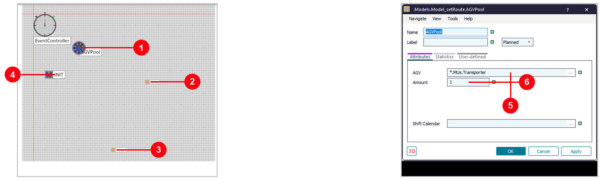
- 1AGVPool ที่จอดและที่เก็บรถ AGV
- 2Marker จุดที่รถวิ่งไป
- 3Marker1 จุดที่ 2
- 4INIT Method ที่ทำงานเองตอนเริ่มรัน
- 5
AGV = *.MUs.Transporterclass ของรถ - 6
Amount = 1จำนวนรถในพูล
ขั้นที่ 1: INIT สั่ง setRoute แล้วรัน
ดับเบิลคลิก INIT (ซ้าย) · Home › Start มุมมอง 3D ที่ 6 วินาที (ขวา)
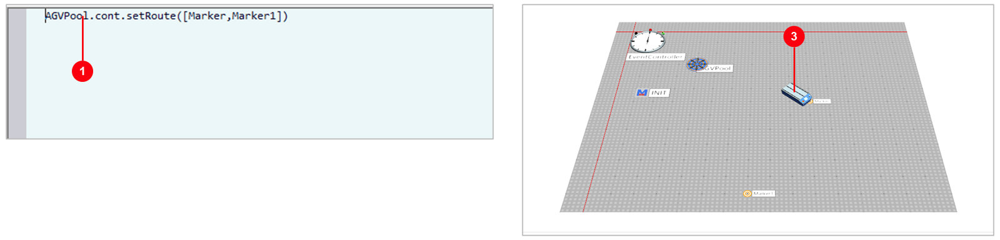
- 1
AGVPool.cont.setRoute([Marker,Marker1]) - 2
AGVPool.cont= รถคันแรกในพูล - 3รถวิ่งไป Marker แล้วไป Marker1 จบที่ 12.99 วินาที
[ ] รถวิ่งผ่านทีละจุดตามลำดับขั้นที่ 2: Model_Destination — บอกจุดปลาย รถหาทางเอง
08_AMR.spp › Model_Destination · ดับเบิลคลิก INIT
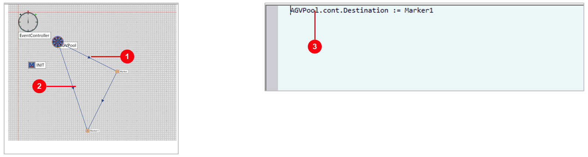
- 1Connector AGVPool → Marker → Marker1
- 2Connector AGVPool → Marker1 (ทางตรง)
- 3
AGVPool.cont.Destination := Marker1 - 4รถเลือกทางตาม Connector ไปถึง Marker1 ที่ 9.49 วินาที (ขั้นที่ 1 ผ่าน Marker ใช้ 12.99)
ขั้นที่ 3: Model_Load_Unload — รับชิ้นงานไปส่ง Station
08_AMR.spp › Model_Load_Unload · ดับเบิลคลิก INIT
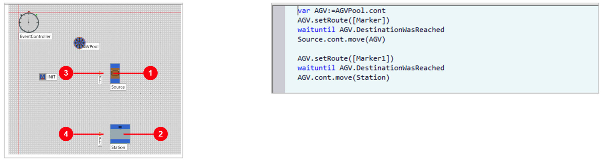
- 1Source ชิ้นงาน Part
- 2Station 10 วินาที
- 3Marker จุดรับงานข้าง Source
- 4Marker1 จุดส่งงานข้าง Station
- 5
waituntil AGV.DestinationWasReachedรอรถถึงก่อน - 6
Source.cont.move(AGV)ขึ้นรถ ·AGV.cont.move(Station)ลงรถ
var AGV:=AGVPool.cont
AGV.setRoute([Marker])
waituntil AGV.DestinationWasReached
Source.cont.move(AGV)
AGV.setRoute([Marker1])
waituntil AGV.DestinationWasReached
AGV.cont.move(Station)ขั้นที่ 3: ผล — ส่งงาน 1 ชิ้นแล้วจบ
Home › Start · มุมมอง 3D ที่ 8 วินาที
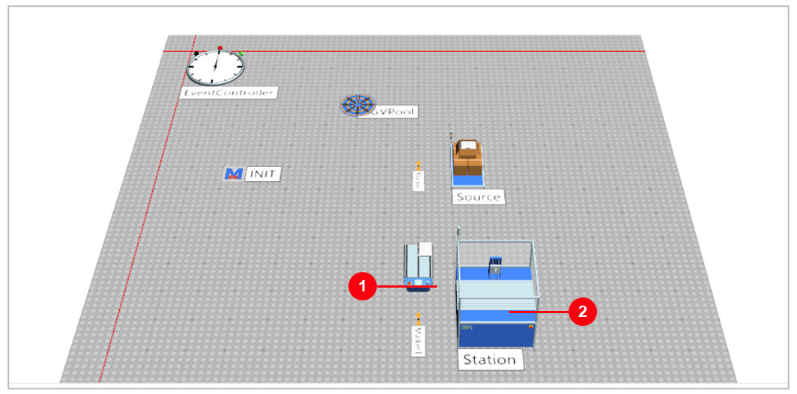
- 1รถรับชิ้นงานที่ Marker แล้ววิ่งไป Marker1
- 2วางลง Station ทำงาน 10 วินาที
- 3INIT ทำงานครั้งเดียว: ส่ง 1 ชิ้น โมเดลหยุดที่ 19.64 วินาที (Station ทำงาน 51% ของเวลา)
ขั้นที่ 4: Model_NumIdleAGVs — AGV 4 คัน และ Exit Control
08_AMR.spp › Model_NumIdleAGVs · Source › Controls
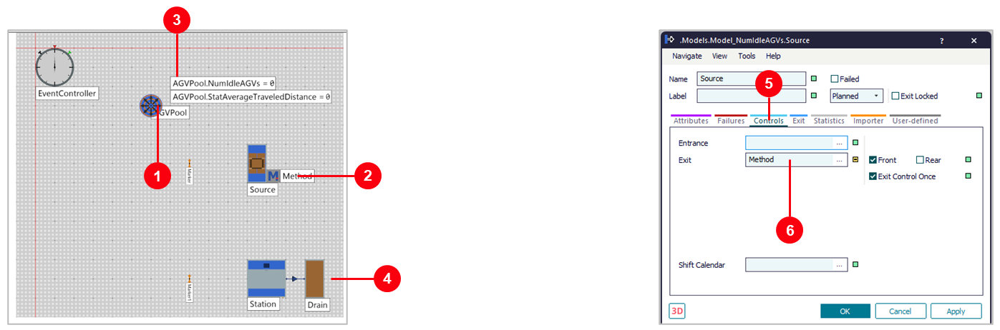
- 1
AGVPool Amount = 4 - 2Method โค้ดรับ-ส่งงาน
- 3Display NumIdleAGVs (รถว่าง) และ StatAverageTraveledDistance
- 4Drain หลัง Station
- 5Source แท็บ
Controls - 6
Exit = Methodเรียก Method ทุกครั้งที่ชิ้นงานจะออกจาก Source
ขั้นที่ 4: โค้ด — ขอรถว่าง ส่งงาน แล้วคืนรถ
ดับเบิลคลิก Method
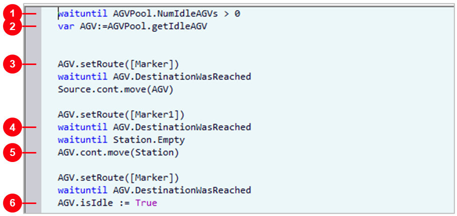
- 1
waituntil AGVPool.NumIdleAGVs > 0รอจนมีรถว่าง - 2
AGVPool.getIdleAGVหยิบรถว่าง 1 คัน - 3ไป Marker แล้ว
Source.cont.move(AGV) - 4
waituntil Station.Emptyรอ Station ว่าง - 5
AGV.cont.move(Station) - 6
AGV.isIdle := Trueกลับ Marker แล้วคืนรถเข้าพูล
waituntil AGVPool.NumIdleAGVs > 0
var AGV:=AGVPool.getIdleAGV
AGV.setRoute([Marker])
waituntil AGV.DestinationWasReached
Source.cont.move(AGV)
AGV.setRoute([Marker1])
waituntil AGV.DestinationWasReached
waituntil Station.Empty
AGV.cont.move(Station)
AGV.setRoute([Marker])
waituntil AGV.DestinationWasReached
AGV.isIdle := TrueisIdle := True รถคันนั้นไม่ถูกเรียกอีก ใช้งานได้คันละรอบAGVขั้นที่ 4: ผล 1 ชั่วโมง — Station ทำงานเกือบเต็ม
รันถึง 1:00:00 (ซ้าย) · มุมมอง 3D ที่ 2 นาที (ขวา)
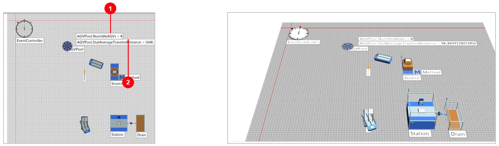
- 1
NumIdleAGVs = 0ตอนจบไม่มีรถว่าง - 2ระยะวิ่งเฉลี่ย 1,648.7 m ต่อคันใน 1 ชม.
- 3Drain 359 ชิ้น · Station 10 วินาที ทำได้สูงสุด 360 · ทำงาน 99.7%
ขั้นที่ 5: Model_Distance — class AGV ของตัวเอง
Class Library › UserObjects › AGV
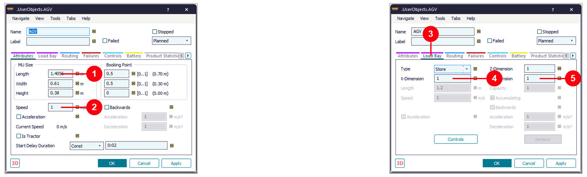
- 1
Length 1.41 mรถเล็กกว่า Transporter (1.6 m) - 2
Speed 1 m/s - 3แท็บ
Load Bay - 4
X-Dimension 1 - 5
Y-Dimension 1บรรทุกครั้งละ 1 ชิ้น (Transporter 3 x 2 = 6) - 6AGVPool ของเฟรมนี้
AGV = *.UserObjects.AGV
Class Library › MUs › Transporter คลิกขวา Duplicate ย้ายไป UserObjects ตั้งชื่อ AGV แล้วแก้ค่า รถทุกคันในพูลใช้ค่าจาก class นี้ลองเอง: ต้องใช้ AGV กี่คัน (ขั้นที่ 4)
| AGVPool Amount | Drain 1 ชม. | Station ทำงาน | ระยะวิ่งเฉลี่ย/คัน | อ่านว่า |
|---|---|---|---|---|
| 1 คัน | 196 ชิ้น | 54.6% | 3,600 m | รถวิ่งตลอด ไม่ทัน Station |
| 2 คัน | 359 ชิ้น | 99.7% | 3,287.7 m | พอแล้ว = เพดานของ Station |
| 3 คัน | 359 ชิ้น | 99.7% | 2,195.0 m | ผลเท่าเดิม รถเริ่มว่าง |
| 4 คัน (ในไฟล์) | 359 ชิ้น | 99.7% | 1,648.7 m | เกินความต้องการ |
| 5 คัน | 359 ชิ้น | 99.7% | 1,320.9 m | ระยะต่อคันลด ผลไม่เพิ่ม |
AGVPool › Amount แล้วกด Reset ก่อน Start
— ถ้ารถยังอยู่ในโมเดล Plant Simulation ไม่ยอมลด Amount ให้น้อยกว่าจำนวนรถที่มีขั้นที่ 6: Frame Model — AGV 1 คัน วิ่งผ่าน Marker 4 จุด
08_AMR.spp › Frame Model · ไม่มีสายพาน มีแต่เส้นทาง
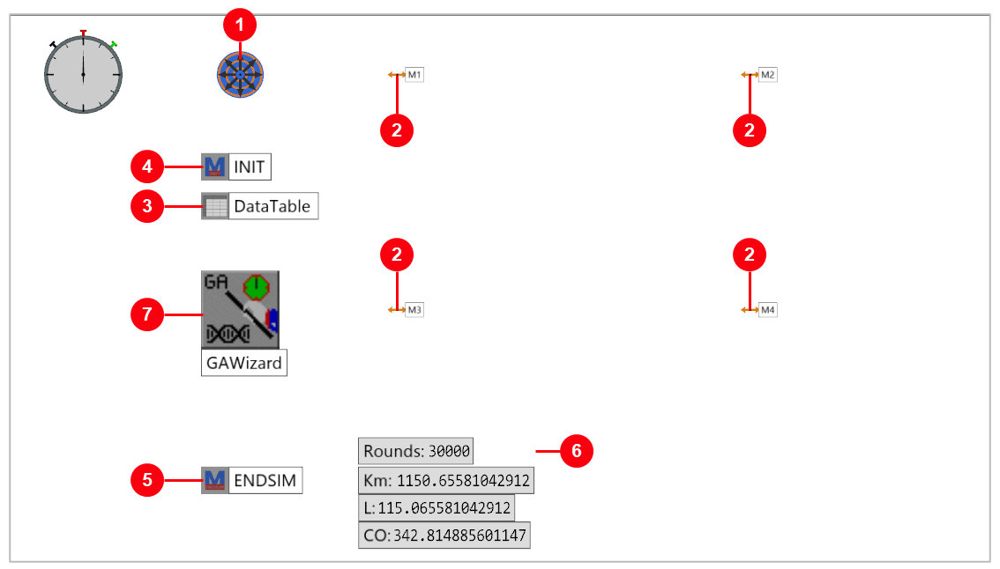
- 1AGVPool รถ 1 คัน จอดที่ [5, -1] m
- 2Marker M1–M4 จุดที่ต้องไป วางเป็นสี่เหลี่ยม 9 × 6 m
- 3DataTable ลำดับ Marker ที่รถจะวิ่ง
- 4INIT Method ที่รันเองตอนเริ่ม สั่งเส้นทาง
- 5ENDSIM Method ที่รันเองตอนจบ คิดผล
- 6Variable Rounds, Km, L, CO แสดงผล
- 7GAWizard ใช้ในขั้นที่ 8
ขั้นที่ 6: AGVPool และ Marker
ดับเบิลคลิก AGVPool (ซ้าย) · ดับเบิลคลิก M1 (ขวา)
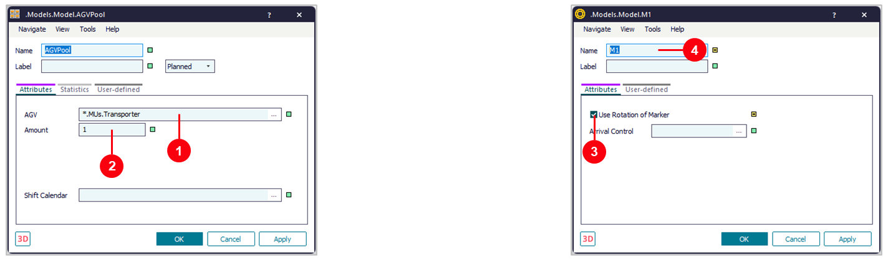
- 1
AGV = *.MUs.Transporterรถมาตรฐาน 1 m/s · 1 วินาที = 1 เมตร - 2
Amount = 1รถ 1 คันพอสำหรับโจทย์เส้นทาง - 3
Use Rotation of Markerรถหันตามทิศของ Marker เมื่อวิ่งถึง - 4
Nameชื่อ M1–M4 คือชื่อที่ DataTable อ้างถึง
ขั้นที่ 6: DataTable — คอลัมน์ 1 ชนิด Object เก็บลำดับ Marker
ดับเบิลคลิก DataTable · คลิกหัวคอลัมน์ 1 › List › Edit Format
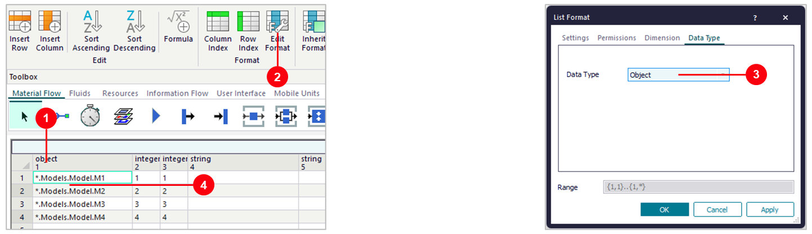
- 1คลิกหัวคอลัมน์ 1 เลือกทั้งคอลัมน์
- 2
Edit FormatริบบอนList › Format - 3
Data Type = Objectแท็บ Data Type ›OK - 4พิมพ์ M1, M2, M3, M4 ทีละแถว (แสดงเป็น
*.Models.Model.M1) = เรียงตามชื่อ
ขั้นที่ 6: Method INIT — สั่งเส้นทางจากตาราง
ดับเบิลคลิก INIT · โค้ดเปิดในแท็บของหน้าต่างหลัก
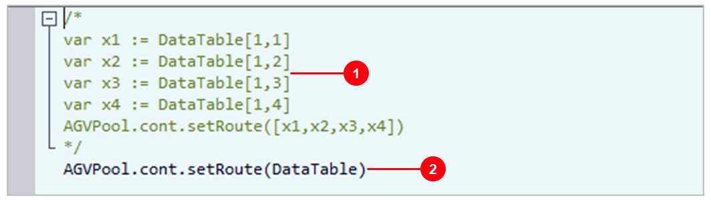
- 1
/* ... */วิธีเดิม: อ่านทีละช่องใส่ x1–x4 แล้วสั่งsetRoute([x1,x2,x3,x4])(ปิดไว้เป็นคอมเมนต์) - 2
AGVPool.cont.setRoute(DataTable)ส่งทั้งตาราง รถวิ่งตามลำดับแถว 1 → 4 สั้นกว่าและเพิ่ม Marker ได้โดยไม่แก้โค้ด
/*
var x1 := DataTable[1,1]
var x2 := DataTable[1,2]
var x3 := DataTable[1,3]
var x4 := DataTable[1,4]
AGVPool.cont.setRoute([x1,x2,x3,x4])
*/
AGVPool.cont.setRoute(DataTable)ขั้นที่ 7: Method ENDSIM — ระยะทาง น้ำมัน CO₂ ต่อปี
ดับเบิลคลิก ENDSIM (ซ้าย) · Variable บน Frame (ขวา)
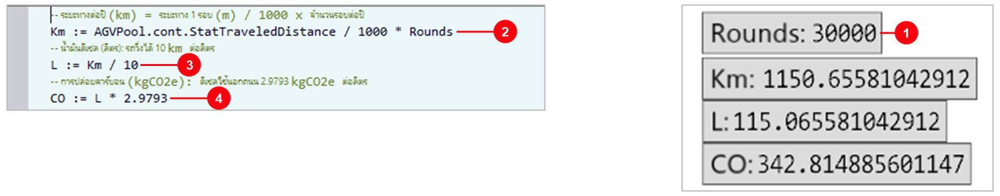
- 1
Rounds = 30,000Variable ใหม่ (integer) สมมุติวิ่งวันละ 100 รอบ × 300 วัน - 2
Km := ระยะทาง / 1000 × RoundsStatTraveledDistance ของรถ (เมตร) → กิโลเมตรต่อปี - 3
L := Km / 10ดีเซล รถวิ่งได้ 10 km ต่อลิตร - 4
CO := L × 2.9793kgCO₂e ต่อลิตร ดีเซลใช้นอกถนน (เครื่องจักรในโรงงาน)
-- ระยะทางต่อปี (km) = ระยะทาง 1 รอบ (m) / 1000 x จำนวนรอบต่อปี
Km := AGVPool.cont.StatTraveledDistance / 1000 * Rounds
-- น้ำมันดีเซล (ลิตร): รถวิ่งได้ 10 km ต่อลิตร
L := Km / 10
-- การปล่อยคาร์บอน (kgCO2e): ดีเซลใช้นอกถนน 2.9793 kgCO2e ต่อลิตร
CO := L * 2.9793ขั้นที่ 7: รัน — ลำดับ M1 → M2 → M3 → M4 ใช้ 38.36 วินาที
Home › Start · มุมมอง 3D ระหว่างรัน (ซ้าย) · ผลหลังรัน (ขวา)
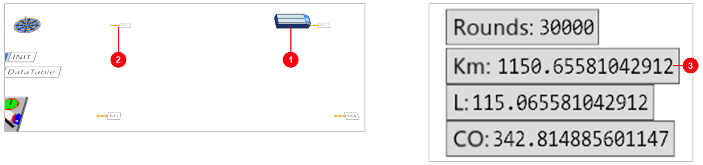
- 1AGV ออกจาก AGVPool ไป M1 → M2 แล้วตัดทแยงลงไป M3
- 2M1 Marker เห็นใน 3D เป็นลูกศรสีส้ม
- 3Km 1,150.7 · L 115.1 · CO 342.8 ระยะ 38.36 m ต่อรอบ × 30,000 รอบ
ขั้นที่ 8: GAWizard — แท็บ Define
ดับเบิลคลิก GAWizard › Define
- 1
Minimumยิ่งน้อยยิ่งดี (เวลาวิ่ง) - 2
Generations 5 · Size 105 รุ่น รุ่นละ 10 คำตอบ - 3
Optimization parameterสิ่งที่ GA ปรับ = ลำดับแถวของ DataTable (หัวข้อถัดไป) - 4
Fitness by tableค่าที่ใช้ให้คะแนน = SimTime - 5
Observations per individual = 1โมเดลไม่มีค่าสุ่ม รัน 1 ครั้งพอ
Home › Manage Class Library › Libraries › GA Wizard ก่อน (ไฟล์นี้มีแล้ว)ขั้นที่ 8: สิ่งที่ GA ปรับ และค่าที่ใช้ให้คะแนน
Define › Optimization parameter › Open (ซ้าย) · Fitness › Open (ขวา)
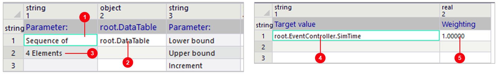
- 1
Sequence ofงานแบบจัดลำดับ - 2
root.DataTableตารางที่ GA สลับแถว · สร้างโดยกด Shift ค้างแล้วลาก DataTable ไปวางบน GAWizard - 3
4 Elements4 แถว = Marker 4 จุด - 4
root.EventController.SimTimeเวลาที่รันจบ = เวลาวิ่ง 1 รอบ - 5
Weighting 1มีค่าเดียว น้ำหนัก 1
AGVPool.cont.StatTraveledDistance ก็ได้ ที่ 1 m/s ได้ค่าเท่ากัน ·
ตาราง ProblemDefinition และ Fitness อยู่ใน GAWizard เปิดเป็นแท็บในหน้าต่างหลักขั้นที่ 8: แท็บ Run › Start
Run › Start · ใช้เวลาไม่ถึง 1 วินาที
- 1
Resetล้างผล GA ครั้งก่อน - 2
StartGA รันโมเดลซ้ำ ทีละคำตอบ - 3
Best fitness value 29.1416เวลาวิ่งที่ดีที่สุด (วินาที) - 4
Current generation 5ครบ 5 รุ่นแล้วหยุด - 5
Set Parametersใส่เลขคำตอบ แล้วกดเพื่อนำลำดับนั้นกลับใส่ DataTable
| รุ่น | ดีสุด (s) | เฉลี่ย (s) | แย่สุด (s) |
|---|---|---|---|
| 1 | 30.65 | 38.61 | 45.35 |
| 2 | 30.65 | 33.74 | 38.17 |
| 3 | 30.65 | 31.67 | 34.03 |
| 4 | 30.65 | 30.77 | 31.27 |
| 5 | 29.14 | 30.50 | 30.65 |
วัดจริงใน 2606: 5 รุ่น × 10 ประเมินจริง 90 ครั้ง ใช้เวลา 0.5 วินาที
ขั้นที่ 8: แท็บ Evaluate — คำตอบดีที่สุด และกราฟรายรุ่น
Evaluate › Best individuals › Show (ซ้าย) · Evolution › Show (ขวา)
- 1
Gen 5 Ind 10คำตอบที่ดีที่สุด (รุ่น 5 ตัวที่ 10) - 2
Fitness 29.1416ถัดไป 30.65, 31.27 … เรียงจากดีไปแย่ - 3เส้นแดง = ดีที่สุดในรุ่น ลดลงในรุ่นที่ 5
- 4เส้นเขียว = ค่าเฉลี่ย ลดลงทุกรุ่น ทั้งรุ่นดีขึ้น
ขั้นที่ 8: ผลหลัง GA — M1 → M2 → M4 → M3
เปิด DataTable (ซ้าย) · Start อีกครั้ง (ขวา)
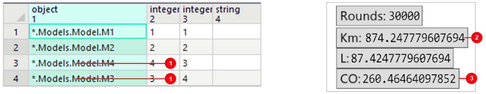
- 1แถว 3–4 สลับกัน รถวิ่งรอบสี่เหลี่ยม ไม่ตัดทแยง
- 2Km 874.2 · L 87.4 จาก 1,150.7 km และ 115.1 ลิตรต่อปี
- 3CO 260.5 kgCO₂e ลดลง 82.4 kg ต่อปี (−24%)
Run › Set Parameters ใส่เลขคำตอบ · SimTime หลังรันใหม่ = 29.14 วินาทีสรุปผล: ก่อน GA เทียบหลัง GA (วัดใน 2606)
| หัวข้อ | ก่อน GA | หลัง GA | ต่าง |
|---|---|---|---|
| ลำดับใน DataTable | M1 → M2 → M3 → M4 | M1 → M2 → M4 → M3 | สลับ 2 แถวสุดท้าย |
| เวลา / ระยะ 1 รอบ | 38.36 s · 38.36 m | 29.14 s · 29.14 m | −24% |
| ระยะทางต่อปี (30,000 รอบ) | 1,150.7 km | 874.2 km | −276.4 km |
| น้ำมันดีเซลต่อปี (10 km/L) | 115.1 ลิตร | 87.4 ลิตร | −27.6 ลิตร |
| CO₂ ต่อปี (2.9793 kg/L) | 342.8 kgCO₂e | 260.5 kgCO₂e | −82.4 kgCO₂e |
GAWizard 5 รุ่น × 10 · ประเมิน 90 คำตอบ · 0.5 วินาที · จำนวนรอบต่อปีเป็นค่าสมมุติ เพื่อให้เห็นผลเป็นน้ำมัน/คาร์บอน
ลองเอง: GA กับโจทย์ที่ใหญ่ขึ้น (ขั้นที่ 6–8)
| ลองเปลี่ยน | ผล (วัดจริง 2606) | เรียนรู้อะไร |
|---|---|---|
| เพิ่ม M5 [13.5, -4] และ M6 [22.5, -4] ใส่ DataTable 6 แถว | เรียง M1–M6: 58.47 s → GA 5 × 10: 37.22 s | −36% ประเมิน 90 จาก 720 ลำดับ |
| ตรวจคำตอบ: รันครบทั้ง 720 ลำดับ | ดีที่สุด 37.22 s (มี 2 ลำดับเท่ากัน) · แย่สุด 81.72 s | GA เจอคำตอบที่ดีที่สุดจริง |
| 6 Marker, GA 10 × 20 | 37.22 s (ประเมิน 380) | ไม่ดีขึ้นอีก = ถึงคำตอบแล้ว |
.MUs.Transporter Speed = 2 m/s | SimTime 19.18 s ระยะทางเท่าเดิม 38.36 m | SimTime ใช้เทียบได้เมื่อความเร็วคงที่ |
| Rounds = 50,000 | 1,917.8 km · 191.8 L · 571.4 kgCO₂e | ผลต่อปีโตตามจำนวนรอบ |
Duplicate หรือ Toolbox › Resources › Marker แล้วเปลี่ยนชื่อ · GA จะนับจำนวนแถวใหม่หลังกด Reset ในแท็บ Run ·
720 ลำดับใช้เวลารันทั้งหมด 43 วินาที ส่วน GA ใช้ 0.3 วินาที · แก้ Speed กลับเป็น 1 หลังลองปัญหาที่พบบ่อย และวิธีแก้ (2606)
| อาการ | วิธีแก้ |
|---|---|
| AGV ไม่ขยับ / Method หยุดเงียบ | เปิด Method ดูบรรทัดที่ผิด · ชื่อ Marker ต้องตรงกับโค้ด |
| ไม่เห็น AGV วิ่ง | AGV วิ่งอิสระเห็นในมุมมอง 3D เท่านั้น |
setRoute(DataTable) error: object passed, string expected | คอลัมน์ 1 ของ DataTable ต้องเป็น Data Type = Object (Edit Format) |
| หา GAWizard ใน Toolbox ไม่เจอ | Home › Manage Class Library › Libraries › คลิกช่อง GA Wizard ให้ขึ้นเครื่องหมายถูก ☑ › OK |
| GA ได้คำตอบไม่เท่ากันทุกครั้ง | GA สุ่ม · เพิ่ม Number of generations หรือ Size of generation แล้วรันใหม่ |
| Km / L / CO ยังเป็นค่าเก่า | ENDSIM ทำงานตอนจบการรันเท่านั้น · กด Reset แล้ว Start ให้รันจนจบ |
ที่มาของตัวเลข และลิงก์อ้างอิง
- ตาราง Emission Factor ม.มหิดล 2024 (อ้าง IPCC และ พพ.) — ดีเซลใช้นอกถนน 2.9793, บนถนน 2.7406 kgCO₂e/ลิตร: rasen.mahidol.ac.th/…/EF-CFO.pdf
- สถาบันสิ่งแวดล้อมไทย (TEI) ฉลากลดคาร์บอน — ดีเซล 2.770 kgCO₂e/ลิตร: tei.or.th/carbonreductionlabel/step-e.html
- ฐานข้อมูล Emission Factor ของ อบก. (TGO) — ตรวจค่าล่าสุดก่อนใช้กับงานจริง: thaicarbonlabel.tgo.or.th
- Plant Simulation Help 2606 หัวข้อ Load Parts Onto an AGV (หน้า 2287) · AGVPool, Marker, setRoute, GAWizard